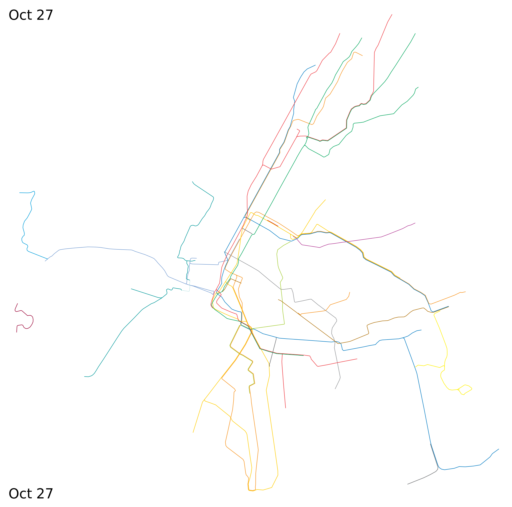
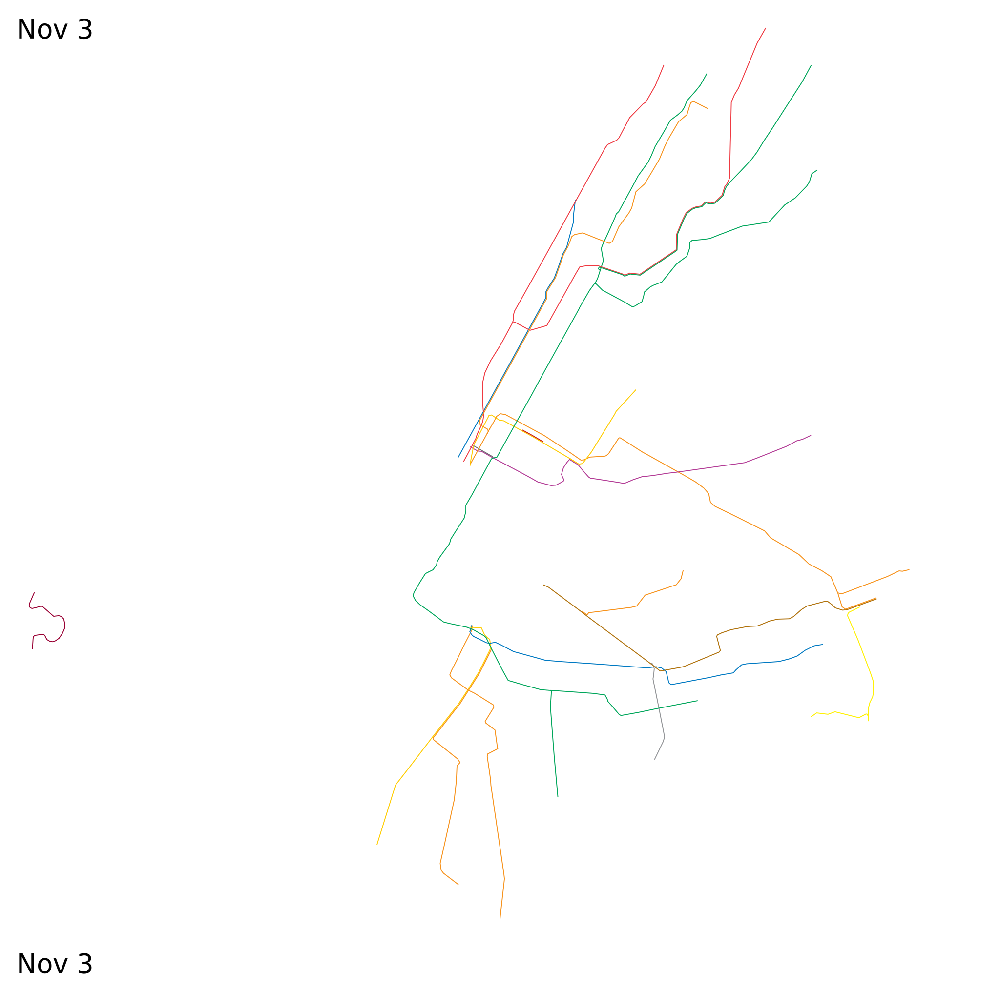
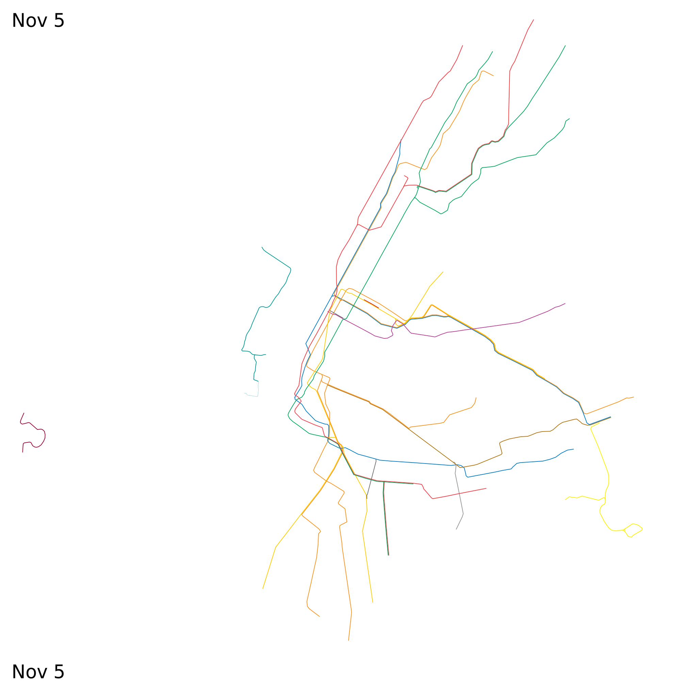
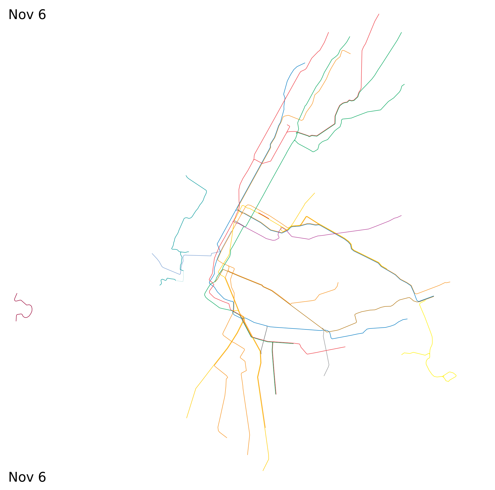
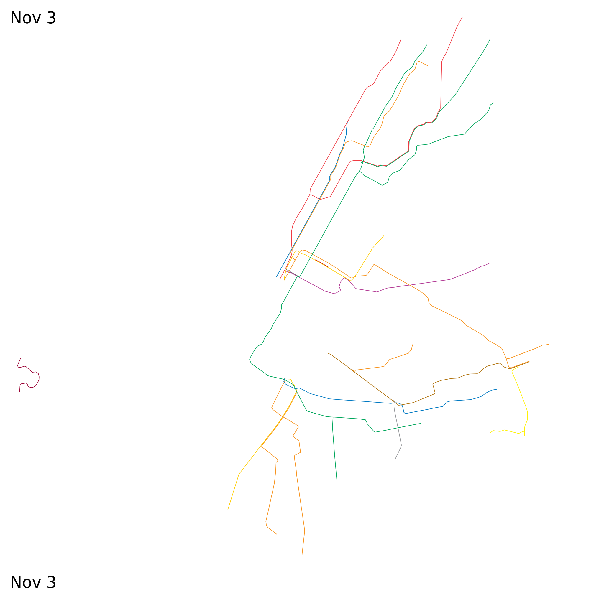
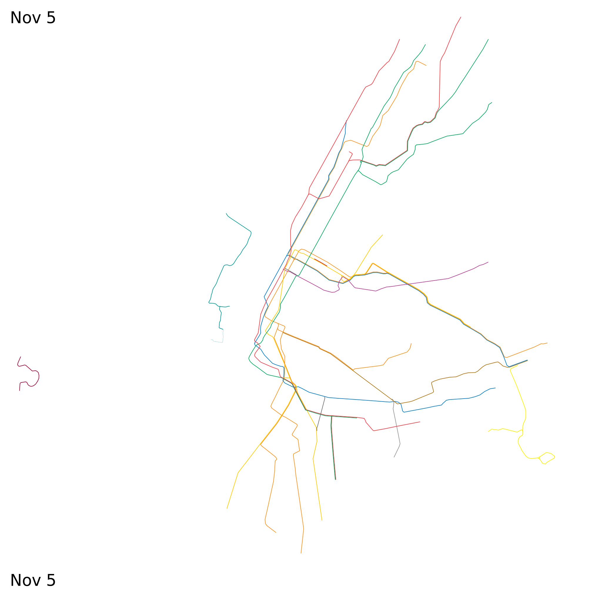
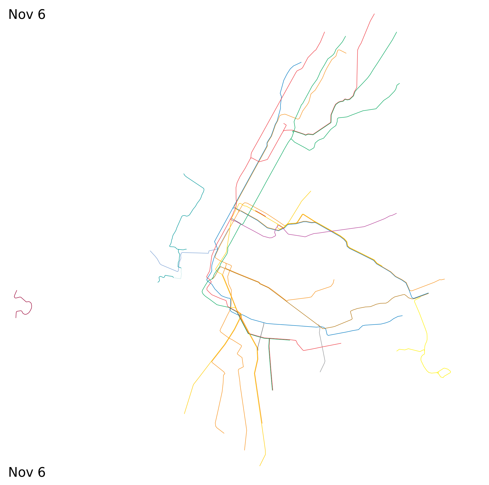
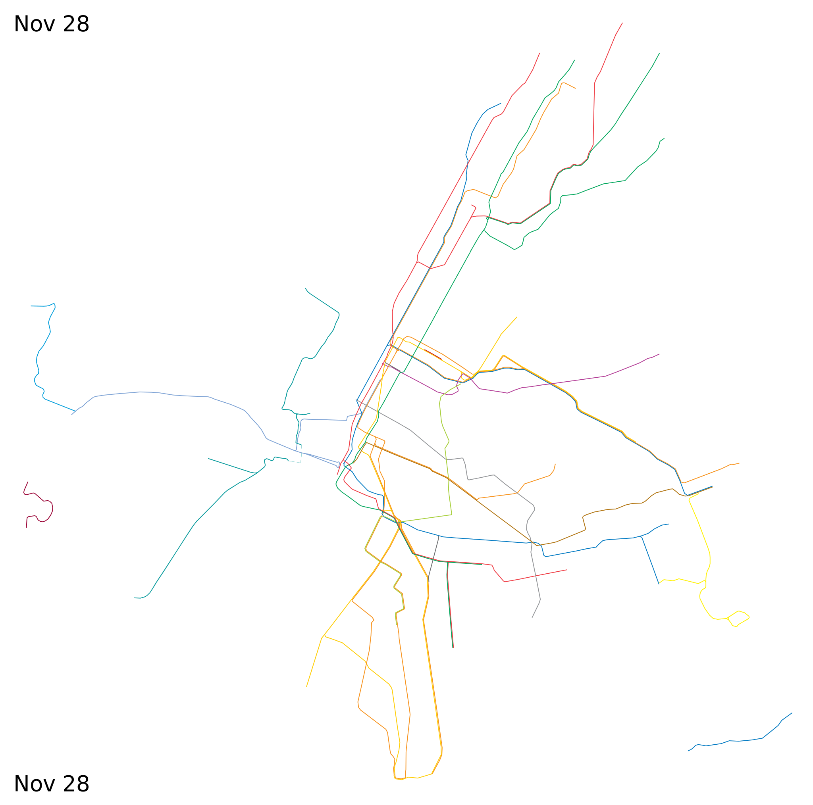
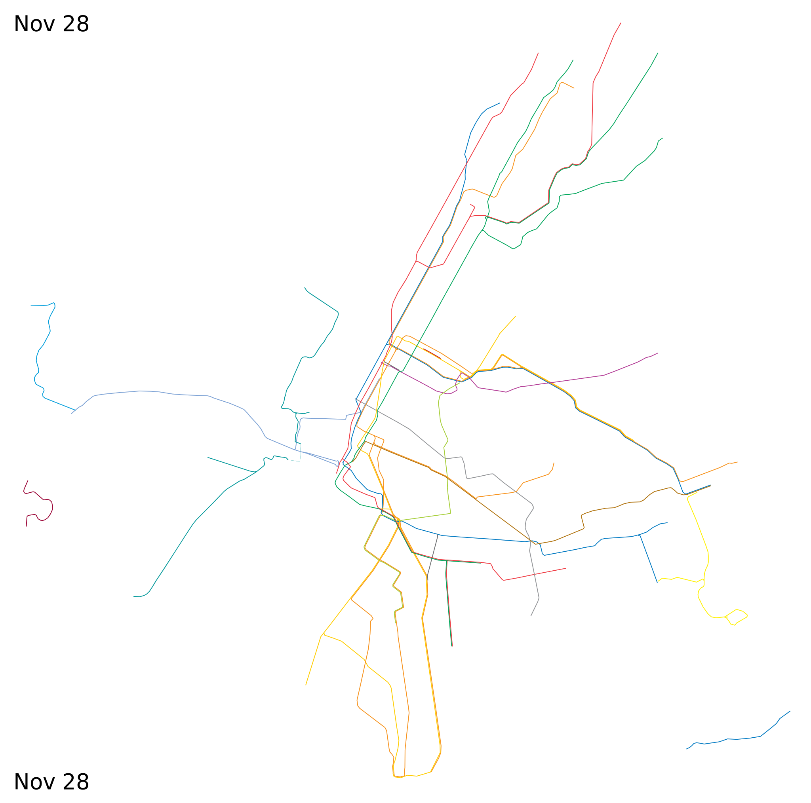

Oct 26 Oct 27 Oct 28 Oct 29 Oct 30 Oct 31 Nov 1 Nov 2 Nov 3 Nov 4 Nov 5 Nov 6 Nov 7 Nov 8 Nov 9 Nov 10 Nov 11 Nov 12 Nov 13 Nov 14 Nov 21 Nov 28 Dec 5 Dec 12 Dec 19 Dec 26 mid-Jan mid-Feb mid-Mar mid-Apr mid-May mid-Jun
previous day (or press a) --- next day (or press s)
Based on midday service on the day in question. Check mta.info, panynj.gov and njtransit.com for most current information.
Please send any corrections or questions to threestationsquare at gmail dot com.

 





 



See also: New York historical rapid transit timeline -
other historical rapid transit timelines -
miscellaneous timelines and maps
By Alexander Rapp (CC-BY-SA) based on map data by OpenStreetMap contributors and historical sources.